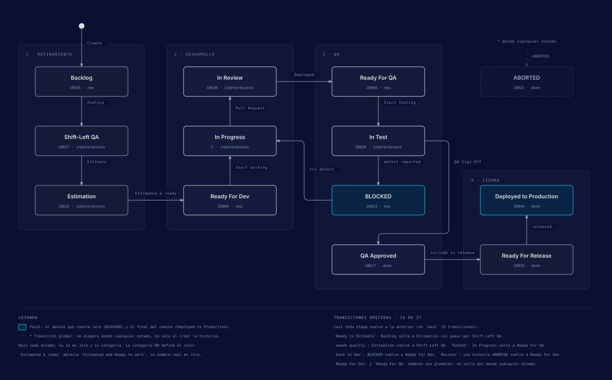

Early-Game: prevención
La primera fase del IQL cubre los steps 1 a 4 y la protagoniza el QA Analyst. Su pregunta es «construyámoslo bien desde el principio»: la calidad se trabaja antes de que exista código, y después se valida la historia en cuanto llega a un entorno de prueba.
Esta página resume la sub-página upexgalaxy.com/metodologia/early-game. Si algo de aquí no coincide con el sitio, manda el sitio. La versión en inglés está en upexgalaxy.com/en/methodology.
La fase en una tabla
| Pregunta | «Construyámoslo bien desde el principio» |
|---|---|
| Enfoque | Prevención: evitar defectos con colaboración temprana y análisis |
| Rol protagonista | QA Analyst |
| Alcance | Steps 1-4 |
| Enfoques integrados | Shift-Left, BDD, Risk-Based |
| Herramientas | Jira (o tracker equivalente), Confluence (o wiki del equipo), cliente de API (Postman, Bruno, curl), harness agéntico (Claude Code, OpenCode, Codex) |
Los stages de esta fase
El stage es lo que se ejecuta y lo que se gatea. Tiene nombre y nunca número. Cada stage declara qué hace el agente, qué firma la persona, qué evidencia exige y con cuánta autonomía trabaja (escala 0-5). Los steps quedan dentro del stage como su desglose. Ninguno de los cuatro stages del Early-Game necesita un verificador separado, y en los cuatro el rol es QA Analyst como executor.
Shift-Left (antes del sprint)
La historia se analiza antes de que exista una línea de código, en lote y sin crear ninguna entidad en el TMS. De aquí salen el ATP, guardado en un campo de la historia, y las preguntas que el equipo todavía puede contestar barato.
| Nivel | L1 · Prevention · TMLC 1st |
|---|---|
| El agente hace |
Reescribe los criterios de aceptación en Given/When/Then con datos concretos,
detecta los gaps y los redacta como preguntas al PO o al dev, escribe el ATP en el
campo acceptance_test_plan, aplica el Test-Design Checklist y deja el
label fechado y la subtarea de revisión.
|
| La persona firma |
Aprueba el lote de historias candidatas y el resumen por historia, y contesta los
gaps. La historia nunca pasa de Estimation: ese es el tope duro del
stage.
|
| Evidencia exigida |
Criterios reescritos en la historia, gaps abiertos como preguntas con destinatario,
label fechado, subtarea [QA] Shift-Left Review cerrada y cero entidades
de TMS creadas.
|
| Autonomía | 2 de 5 |
| Salidas |
ATP en el campo acceptance_test_plan; gaps como preguntas al PO/dev
|
| Transiciones en Jira |
US: Backlog → Shift-Left QA (Analyze) US: Shift-Left QA → Estimation (Estimate) Subtarea [QA] Shift-Left Review: ACTIVE → Close (Complete) |
| Steps | Step 1, mitad pre-sprint |
Planning (dentro del sprint)
Con la historia ya en sprint, su plan se convierte en ítems: primero el ATS, después el ATP y el ATR. La cobertura se arma en dos ejes, y el ATR no existe sin un entorno declarado.
| Nivel | L1 · Prevention · TMLC 1st |
|---|---|
| El agente hace |
Crea el ATS primero y de ahí deriva el ATP y un ATR vacío. Deriva los casos
(outlines en jira-native, Test a detalle en jira-xray).
Decide por triage, veto y risk-score qué superficies UI/API/DB entran, sin
preguntarlo. Crea o encuentra el STP y el FTP de la épica.
|
| La persona firma | Confirma la explicación de la historia antes de que el stage avance: el agente cuenta qué entendió y espera el OK. |
| Evidencia exigida | ATP como ítem Test Plan creado desde el campo, orden set-first respetado, ATR siempre con Test Environment (sin él el stage no cumple su DoD) y cobertura declarada en dos ejes. |
| Autonomía | 2 de 5 |
| Salidas | ATS, ATP (ítem Test Plan), ATR vacío con Test Environment, FTP, STP |
| Steps | Step 1, mitad in-sprint |
Execution (dentro del sprint)
Son dos movimientos y van en este orden: el smoke valida el entorno y la Trifuerza valida la feature. Lo que aparece fuera del plan vuelve al set en lugar de descartarse.
| Nivel | L2 · Early Detection · TMLC 2nd |
|---|---|
| El agente hace | Corre el smoke como Go/No-Go antes que nada, ejecuta lo planificado y explora más allá por UI, API y DB. Realimenta las particiones nuevas al set y propone cada hallazgo ya clasificado (Bug / Defect / Improvement) con su severidad derivada. |
| La persona firma | Hace el triage de cada hallazgo y decide si se filea: ningún bug se crea sin acuerdo humano explícito de que el defecto es real. Recalibra a mano toda severidad de clase seguridad o autenticación. |
| Evidencia exigida | Smoke corrido primero y registrado, capturas y respuestas en la carpeta de evidencia del ticket, y cada hallazgo trazado a la historia y a su criterio de aceptación. |
| Autonomía | 3 de 5 |
| Salidas | Evidencia de la corrida; hallazgos clasificados como Bug, Defect o Improvement |
| Transiciones en Jira |
US: Ready For QA → In Test (Start Testing) US: In Test → BLOCKED (defect reported) |
| Steps | Step 3, la ejecución |
Reporting (dentro del sprint)
La corrida queda registrada: se llena el ATR, el comentario de QA cuenta lo que pasó y los enlaces se verifican en su dirección. Sin eso la historia no se firma.
| Nivel | L2 · Early Detection · TMLC 2nd |
|---|---|
| El agente hace | Llena el ATR con el resultado por caso, escribe el comentario de QA, resuelve los enlaces de la cascada y anota el follow-up de regresión. |
| La persona firma | La transición: el sign-off de la historia o el reporte del defecto. La firma siempre es de una persona. |
| Evidencia exigida | ATR como ítem Test Execution, comentario de QA publicado y trazabilidad verificada en su dirección (que el enlace exista no alcanza). |
| Autonomía | 2 de 5 |
| Salidas | ATR lleno; comentario de QA |
| Transiciones en Jira |
US: In Test → QA Approved (QA Sign-Off) Bug / Defect / Improvement: Ready For QA → Closed (ReTest Passed) |
| Steps | Step 3, el registro |
El step 4 (Priorización Risk-Based) pertenece al Early-Game, pero corre dentro del stage Documentation, que se extiende hasta el Mid-Game. Su contrato completo está en Mid-Game.
Los 4 steps del Early-Game
Los steps del Early-Game recorren el TMLC (Test Manual Life Cycle), cuyas cuatro etapas son Análisis, Exploración, Priorización y Documentación. El step 2 es la excepción: es un evento del SDLC, no trabajo de QA.
| Step | Etapa | Qué se hace | Entregable | Stage |
|---|---|---|---|---|
| 1. Análisis de Requerimientos | TMLC 1st | Analizar el Epic y cada Story antes del sprint, junto con las historias hermanas de la misma épica. | ATP por Story (pre-sprint, en el campo de la historia) + FTP por Epic, cuyo ítem se crea al abrir el sprint | Shift-Left + Planning |
| 2. Desarrollo e Implementación | Evento del SDLC | Desarrollo construye y despliega la US en staging mientras QA prepara la estrategia. | Entorno funcional para testing | Sin stage: es trabajo de desarrollo |
| 3. Pruebas Exploratorias Tempranas | TMLC 2nd | Smoke de Go/No-Go y después exploración por Trifuerza (UI · API · DB). | US aprobada o bugs reportados, con el ATR como registro de la ejecución | Execution + Reporting |
| 4. Priorización Risk-Based | TMLC 3rd | Decidir qué escenarios del ATP merecen un Test Case persistente en el TMS y cuáles quedan como exploratorios. | ATP refinado, con un veredicto de ROI por escenario | Documentation, fase Prioritize |
Step 1: Análisis de Requerimientos
El análisis del Epic y el de cada Story ocurren antes del sprint. Pre-sprint, el ATP de la
historia vive solo en el campo acceptance_test_plan, todavía sin ítem Test
Plan. El ítem FTP tampoco nace aquí: se crea o se refina dentro de
/sprint-testing, al cargar el contexto del Epic, ya en sprint. El FTP es un
documento vivo que se escribe una vez por épica y se refina a lo largo de ella, porque el
equipo aprende con cada historia que entrega.
La historia tampoco se analiza aislada. Se miran sus hermanas de la misma épica (las ya desarrolladas, las que están en desarrollo y las que solo están definidas), y esa vista completa de la feature es la que hace que los ATPs salgan mejores.
-
1a. Análisis de Epic → FTP
Contexto macro. Documento vivo que se refina durante toda la épica.
-
1b. Análisis de las historias hermanas
Entregadas, en desarrollo y solo definidas: la foto completa de la feature.
-
1c. Análisis de Story → ATP
Uno por Story, citando el FTP en vez de volver a derivarlo.
Step 2: Desarrollo e Implementación
Es el punto de sincronización con el SDLC: el período en que desarrollo construye mientras QA trabaja en paralelo. No es tarea directa de QA. Se cuenta entre los 15 steps para que el ciclo se lea completo, y el sitio oficial lo dibuja distinto. La herramienta es el repositorio del cliente (GitHub / GitLab), y el estándar exige una rama por historia y un PR revisado.
Step 3: Pruebas Exploratorias Tempranas
La US se valida en dos movimientos y en este orden. Primero el smoke test de Go/No-Go, que valida el entorno. Después la exploración por Trifuerza (UI · API · DB), que valida la feature ejecutando lo planificado en el ATP y en el FTP. Saltarse el smoke es el anti-patrón clásico.
Los hallazgos se reportan en el momento, porque el reporte de defectos vive dentro de la exploración y no es un step aparte. Antes de filear se clasifica cada hallazgo como Bug, Defect o Improvement, y la clasificación sigue la etapa de vida de la feature, no el entorno donde apareció. Cada uno se documenta con información clara y reproducible. La altitud Feature no tiene ejecución propia: el FTP se consume como contexto y no genera resultados.
Step 4: Priorización Risk-Based
Aquí se decide qué escenarios del ATP merecen un TC persistente en el TMS. La decisión corre después de ejecutar y reportar: el set de regresión se decide por ROI y nunca se asume al planificar. Los criterios son impacto potencial, probabilidad de defectos y valor-costo-riesgo. Cada escenario recibe uno de tres veredictos:
| Veredicto | Significa |
|---|---|
| Candidate | Regresión automatizada: pasa al TALC y se implementa en código con Playwright. |
| Manual | Regresión manual. Es terminal: no se automatiza. |
| Deferred | Fuera de la regresión. Se registra en el reporte de priorización y no se crea TC en el TMS. |
Candidate, MANUAL y Deferred también existen como estados de Jira (Candidate y MANUAL en el TC, Deferred en el Bug). El veredicto y el estado comparten nombre, pero son cosas distintas.
Herramientas por step
El sitio marca cada herramienta como adaptable (parte del estándar de implementación, se puede cambiar) o client-controlled (la trae el entorno del cliente).
| Herramienta | Tipo | Nota |
|---|---|---|
| Harness agéntico (Claude Code, OpenCode, Codex) | Adaptable | El método vive en los skills (markdown), no en el agente. Cambiar de harness cambia velocidad y ergonomía, no el flujo. |
| MCPs (OpenAPI, base de datos, tracker, navegador) | Adaptable | Así lee el agente schema, datos y tracker. Regla del boilerplate: el MCP lee y nunca ejecuta (la API se ejercita con curl y el token de la CLI), y un MCP configurado está en rojo hasta que responde de verdad. |
| Cliente de API (Postman, Bruno, curl) | Adaptable | La pata API de la Trifuerza. El boilerplate usa OpenAPI MCP + curl. |
| Jira (o tracker equivalente) | Client-controlled |
El IQL exige un workflow con sus estados y transiciones. Solo Jira está implementado
(.agents/jira-workflows.json); otro tracker es trabajo de adaptación
que se evalúa al inicio.
|
| Confluence (o wiki del equipo) | Client-controlled | La documentación del cliente. Los artefactos QA viven en el tracker, no en el wiki. |
| GitHub / GitLab | Client-controlled | Repositorio y pull requests del step 2. |
Atributos de calidad por riesgo
El ATP de cada historia declara qué atributos aplican y por qué, a partir de su riesgo: impacto, probabilidad, datos que toca y superficie expuesta. Lo que no entra por riesgo no se prueba en esa historia. El FTP puede elevar un atributo a toda la feature, y funcionalidad aplica siempre.
| Atributo | Entra cuando la historia... |
|---|---|
| Funcionalidad | Siempre (es el AC). |
| Seguridad | Toca autenticación, roles o datos sensibles, o recibe input externo. |
| Performance | Agrega listados, consultas o cálculos pesados, o toca un flujo con SLO. |
| Accesibilidad | Crea o cambia UI pública. |
| Resiliencia | Depende de integraciones externas, colas o reintentos. |
| Integridad de datos | Escribe, migra o transforma datos persistidos. |
| Compatibilidad | Corre en varios navegadores, dispositivos o versiones de API. |
| Privacidad | Procesa datos personales o regulados. |
El ATP antes del sprint vive en el campo de la historia
El Early-Game empieza antes que el sprint. En ese momento ya hay un plan por historia, pero
todavía no hay ítem: el ATP está únicamente en el campo
{{jira.acceptance_test_plan}} de la historia. La razón es práctica. Si el plan
naciera como ítem durante el análisis, cada historia descartada en el backlog dejaría un
Test Plan huérfano, sin nada que probar.
El ítem se crea en el primer stage del sprint (Planning), a partir de ese mismo campo. No existe un estado intermedio «ATP DRAFT». El paso previo se marca con etiquetas y una subtarea, visibles en el tablero:
| Marca | Valor |
|---|---|
| Etiqueta | shift-left-reviewed |
| Etiqueta | shift-left-{YYYY-MM-DD} |
| Subtarea | [QA] Shift-Left Review |
- Nombre completo
- Acceptance Test Plan
- Dónde vive
-
Antes del sprint, solo en el campo
{{jira.acceptance_test_plan}}de la historia. Durante el sprint, en un ítem Test Plan. - Cuántos hay
- Uno por historia
- Título
ATP: {STORY-KEY}: {story title}
El FTP funciona distinto. Es de la altitud de la épica y se refina mientras la épica avanza. El ATP lo cita en vez de volver a derivarlo, y por eso el análisis de una historia empieza mirando a sus hermanas.
Ejecutar, después priorizar, después documentar
Lo intuitivo sería escribir los casos y después correrlos. El IQL invierte el orden porque el set de regresión persistente se decide por retorno, y el retorno solo se conoce después de haber probado. La secuencia cruza la frontera de fase: empieza en el Early-Game y termina en el Mid-Game.
-
Step 3 · Early-Game: Pruebas Exploratorias Tempranas
Smoke de Go/No-Go, después Trifuerza. Los hallazgos se clasifican y se reportan en el momento.
-
Step 4 · Early-Game: Priorización Risk-Based
Cada escenario recibe su veredicto de ROI: Candidate, Manual o Deferred.
-
Step 5 · Mid-Game: Documentación Asíncrona de Test Cases
Solo los Candidate y Manual se formalizan en el TMS, y siempre después de ejecutar y reportar. Detalle en Mid-Game.
El workflow de la User Story en Jira
El Early-Game toma la historia en el backlog y la deja aprobada o con bugs reportados. El diagrama muestra el ciclo completo en la instancia real de Jira, con los nombres de estado exactos. Los cuatro steps de la fase caen en su primer tramo.

| Etapa | Estados |
|---|---|
| 1 · Refinamiento | Backlog → Shift-Left QA → Estimation |
| 2 · Desarrollo | Ready For Dev → In Progress → In Review |
| 3 · QA | Ready For QA → In Test → QA Approved, con desvío a BLOCKED si se reporta un defecto |
| 4 · Cierre | Ready For Release → Deployed to Production |
Transiciones que el diagrama omite
- Casi toda etapa vuelve a la anterior con
back. -
Ready to Estimate: Backlog salta a Estimation sin pasar por Shift-Left QA. needs quality: Estimation vuelve a Shift-Left QA.Pushed: In Progress salta a Ready For QA.back to dev: BLOCKED vuelve a Ready For Dev.Recover: una historia ABORTED vuelve a Ready For Dev.-
Ready For Dev,Ready For QAy ABORTED son globales: se llega a ellos desde cualquier estado.
Enfoques y herramientas de la fase
- Shift-Left
- Mover las actividades de calidad más temprano, antes de que exista código que romper.
- BDD
- Especificación colaborativa en escenarios Given-When-Then, escritos con el equipo.
- Risk-Based
- Priorizar por impacto y probabilidad de fallo en lugar de cubrirlo todo por igual.
| Herramienta | Para qué en esta fase |
|---|---|
| Jira (o tracker equivalente) | El tablero donde vive la historia, sus subtareas de QA y el campo que guarda el ATP. |
| Confluence (o wiki del equipo) | El contexto de la épica del que sale el análisis. |
| Cliente de API (Postman, Bruno, curl) | Recorrer la API antes de que exista una pantalla que probar. |
| Harness agéntico (Claude Code, OpenCode, Codex) | Leer la épica, cruzar historias hermanas y redactar escenarios. |
En este repo
Cada stage del Early-Game tiene un skill dueño en .agents/skills/:
| Stage | Skill |
|---|---|
| Shift-Left | /shift-left-testing |
| Planning, Execution, Reporting | /sprint-testing |
| Documentation (step 4 en adelante) | /test-documentation |
El Definition of Done y el contrato de cada stage están en
.agents/skills/agentic-qa-core/references/stage-gates.md. Cómo encaja todo el
IQL con el repo se cuenta en El IQL en este repo.